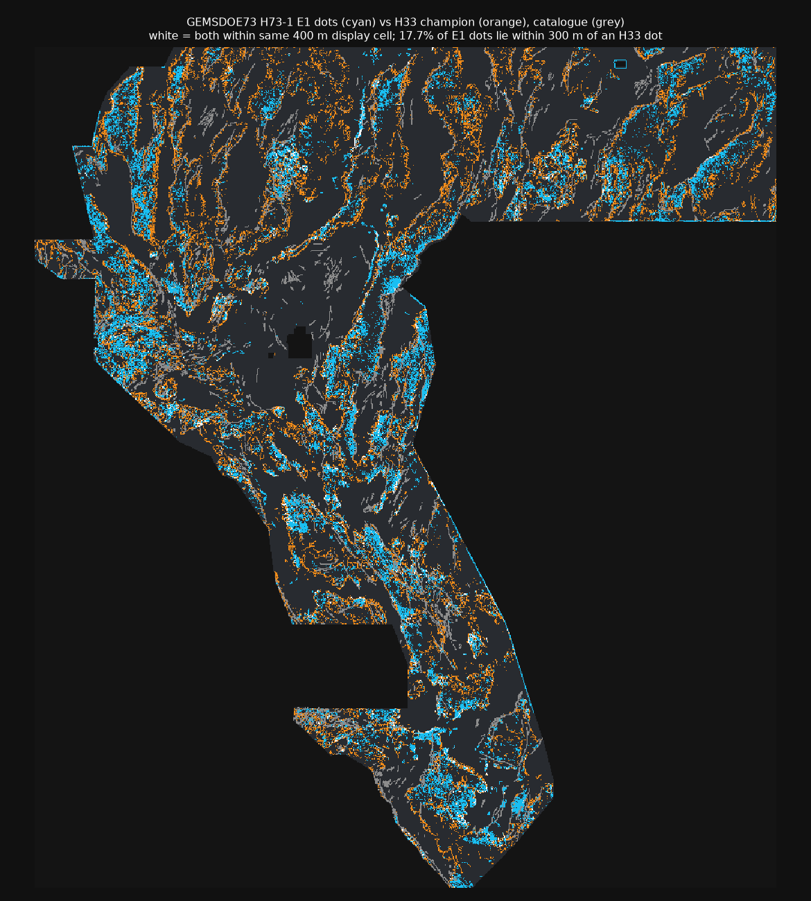

DOE GEMS Prize (DrivenData #306) · one preregistered lane · every number labelled HOLDOUT-DTI or OWNER-REPORT · no organizer score exists for this repo's file.
| Gate 1 — OK to download? | YES Format-valid and registry-unique; safe to download for review. |
|---|---|
| Gate 2 — Recommended to submit? | NO — DO NOT SUBMIT Verdict: NEGATIVE. The candidate failed the preregistered holdout gate (HOLDOUT-DTI 0.0548 vs fold-fair H33-analogue control 0.0939). Submitting it would spend a weekly slot against this repo's own evidence. A human selector may override knowingly (see the report-only proxy below) — that decision is not made here. |
⬇ Download .tif (review only) ⬇ Download .zip (single GeoTIFF inside) Run card (JSON)
Filename: gems73-h73-1-piedmont-scarpchain-e1-37654dots-20261021.tif
Unique submission name: gems73-h73-1-piedmont-scarpchain-e1-37654dots-20261021
Note to paste in the DrivenData “Note (optional)” field (125/140 chars) — only if a selector overrides:
G73 H73-1 E1 piedmont scarp-chain unsupervised 37654 dots; HOLDOUT-DTI 0.0548 vs ctrl 0.0939 - NEGATIVE, selector review only
sha256: d09dca2465f784e8a07571894cd12c689e4b34e8f7c14be321b5d6006b2d2ece · 141,163 bytes ·
single band float32 · EPSG:32611 · 3730×3292 · 37,654 dots · min 0.0, max 1.0,
0 NaN in all 12,279,160 cells · CRS/shape/transform match the sample submission:
True · all validator checks passed:
True (validator receipt)
Why this cannot trigger “Predicted values must be in range [0, 1]”: the file is written
all-finite (0.0 outside the footprint, nodata=None), then re-opened from disk and every cell is
checked finite and in [0,1] by the shared validator before delivery. See the
executive summary for exact submission steps.
Why did h33-h33-2-b2…-zeros score 0.2778 (OWNER-REPORT)? Measured here, byte-exact:
it is D2.8 with every dot ≤200 m from the catalogue deleted, and D2.8 ⊂ H19-5 with zero exceptions.
H19-5's surface is ~90% LiDAR/DEM scarp-openness (weights 0.55+0.35 in its synthesis code) — the same
evidence class expert re-mapping uses. Dotting to ~2.5 px spacing removes mass below the metric's
break-even credit bar k > 0.2·DTI, and the B2 prune deletes dots that can only cover
already-mapped (masked, zero-credit) faults while paying full false-positive tax.
Can we beat 0.2778 / 0.4413? Not with this lane, on this evidence. Emission gains are nearly exhausted; beating the champion needs a field with higher credit density in its top 37,654 dots. H73-1 tested whether a fully unsupervised piedmont-scarp-chain geometry could be that field. It could not — see the holdout table. The one encouraging signal (report-only SGMC-piedmont proxy, E1 0.1045 vs champion 0.0980) is not the preregistered instrument and does not override the gate.
HOLDOUT-DTI · evaluator gems57-pooled-hide-v2 · whole-component
hide-and-recover, fold-fair emission, visible faults masked pixel-exactly ·
11,321 withheld positive pixels · α=0.2, β=0.8, 300 m triangular kernel ·
paired spatial-cluster bootstrap 95% CIs.
| Arm | DTI | 95% CI |
|---|---|---|
| E1 (this lane) | 0.0548 | [0.0417, 0.0688] |
| E2 (no piedmont weight) | 0.0339 | — |
| E3 (piedmont scarp only) | 0.0564 | — |
| H33-analogue control (fold-fair) | 0.0939 | [0.0813, 0.1076] |
| Random control | 0.0484 | — |
E1 − control = -0.0391 [-0.0571, -0.0211]; E1 − random = +0.0064 [-0.0068, +0.0202] (includes 0). Leakage canaries: 17 channels, max symmetric AUC 0.611 ≤ 0.90 — PASS. Instrument warning (measured here, n=13 OWNER-REPORT live scores): static catalogue DTI ranks live at Spearman -0.49, SGMC-piedmont at +0.74 — every local proxy is a screen, not a score prediction.
| Surface Spearman (pre-placement, 200k sample) | max 0.114 ≤ 0.90 ✓ |
|---|---|
| Final dots Spearman (full footprint) | max 0.030 ≤ 0.90 ✓ |
| Final dots mutual 3 px overlap | max 0.390 ≤ 0.70 ✓ (worst: gems32-bayesopt-dilation-scarp-d28-20261004-nan.tif) |
| vs H33 champion | forward 0.177 · mutual 0.172 · ρ 0.004 |
| Literal forward overlap | max 0.994 only vs the 206,895-dot r13 lattice whose 3 px halo covers ~100% of the footprint (mutual 0.139) — IR-73-01 |

Executive summary — exactly how to submit (and why not to submit this file) · Official sources · Five hypotheses (preregistered)
Core values: Maximize P(Win) — a negative result that saves a weekly slot is a win for the campaign. Own the Outcome — the gate failure is published, not buried. Weekly slots spent by this repo: 0.